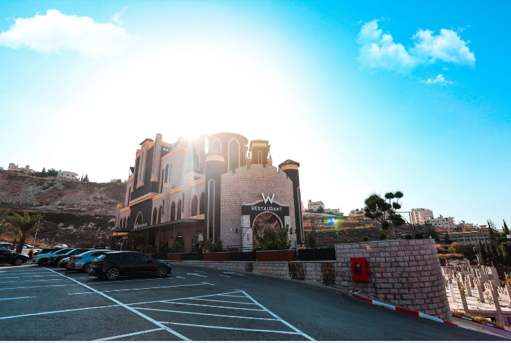

W restaurant⭐ ⭐ ⭐ ⭐ ⭐
المطعم الافضل والأفخم في #فلسطين " W restaurant " 😍
- 🔸مواقف سيارات مجانية .
- 🔸 مطعم مميز بمساحات واسعة داخلية يتسع ل أكثر من 500 شخص .
- 🔸 أطباق عالمية شهية ومميزة .
- 🔸 طهاة مميزون أصحاب خبرة وشهادات عالمية .
- 🔸 قاعة مخصصة للألعاب الاطفال تخضع لمراقبة مشرفة .
- 🔸 قاعة اجتماعات مجهزة بكافة التجهزيات .
- 🔸 جلسات داخلية وجلسات خارجية " ترس " .
- 🔸 خدمة " الفيزا " .
- 🔸 اطلالة مميزة وموقع إستراتيجي .
WhatsApp📱00972597367788 📲0512367788 | ☎️ 092367788
